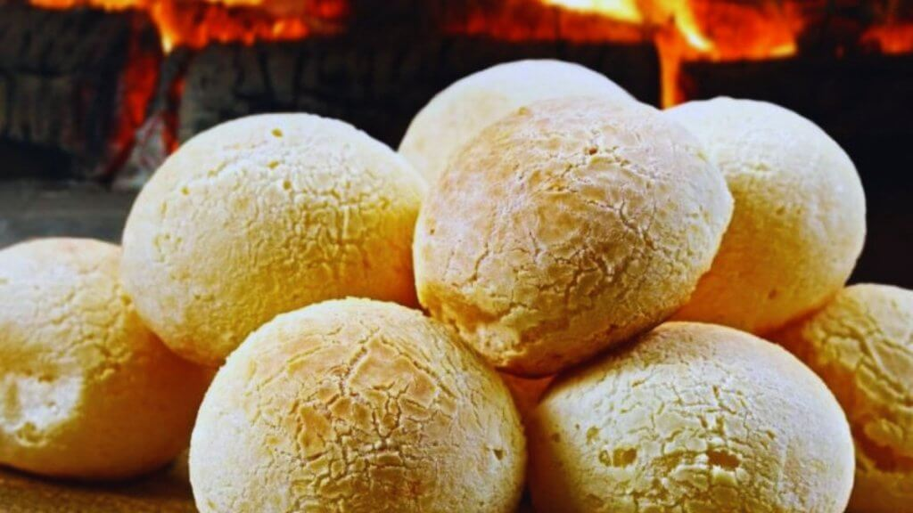
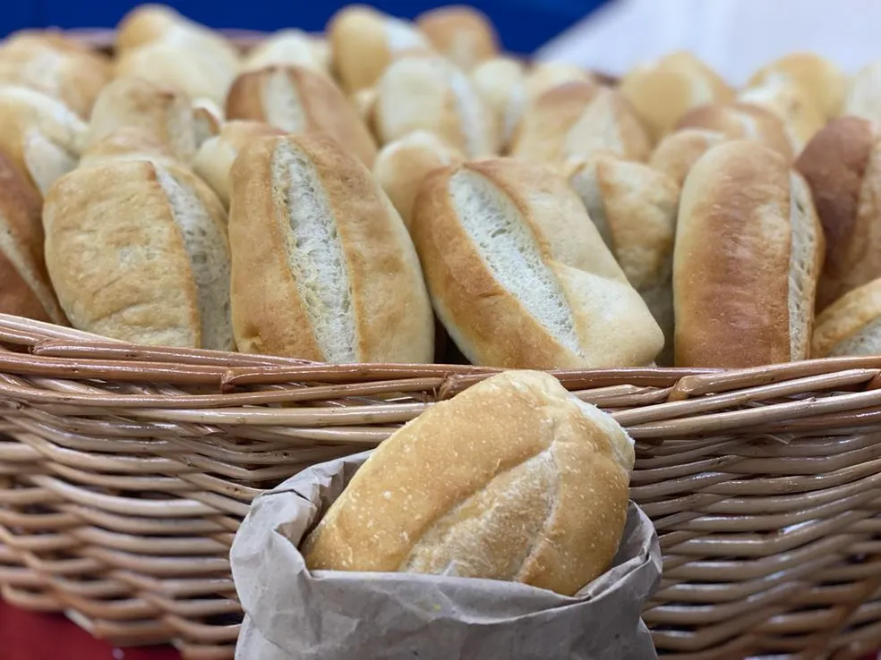

Pão de queijo
Ingredientes
2 e 1/2 xícaras (chá) de água (600 ml)
1 e 1/2 xícara (chá) de óleo
1 e 1/2 xícara (chá) de leite
1 colher (sopa) cheia de sal
1 kg de polvilho azedo
6 ovos
150 g de parmesão ralado
Modo de Preparo
Ferva a água com o óleo, o leite e o sal e escalde o polvilho, envolvendo bem. Deixe esfriar.
Acrescente os ovos um a um, misturando bem, e incorpore o queijo.
Amasse até uniformizar, modele bolinhas e disponha em assadeiras sem untar.
Leve ao forno médio preaquecido (200 ºC) por 20 minutos.
Reduza a temperatura e deixe assar por mais uns 5 minutos ou até dourarem.
Pão Frances
Ingredientes
500 gramas de farinha de trigo
10 gramas de fermento biológico seco
5 gramas de açúcar
5 gramas de manteiga sem sal
275 mililitros de água
10 gramas de sal
Modo de Preparo
Separar e quantificar os ingredientes.
Juntar os ingredientes secos e adicionar a água aos poucos. A manteiga por último .
Sovar bem a massa até que fique lisa.
Deixar fermentar por aproximadamente 40 minutos.
Dividir a massa, modelá-la e colocar nas assadeiras.
Deixar fermentar até dobrar de volume, por aproximadamente 40 minutos.
Fazer o corte apropriado com o estilete.
Levar ao forno quente a 200 graus Célsius com vapor e deixar assar de 12 a 15 minutos,
ou até ficar com a casca dourada.
Pudim de leite condensado

Ingredientes
6 colheres de sopa de açúcar
1 lata de leite condensado
1 lata de leite, use a mesma medida do leite condensado
3 ovos
Modo de Preparo
Numa forma para pudim, de 20 centímetros de diâmetro, coloque 6 colheres de sopa de açúcar
e leve ao fogo médio até virar uma calda caramelada, por mais ou menos 3 minutos.
Retire do fogo e vá virando a fôrma, de modo que a calda forre todo o fundo e lateral da mesma.
Reserve.
Num liquidificador coloque uma lata de leite condensado, uma lata de leite, a mesma medida da
lata de leite condensado, e 3 ovos e bata bem por mais ou menos 1 minuto.
Desligue o liquidificador e deixe a mistura descansar por 15 minutos.
Com esta espera a espuma fica sobre a superfície, o pudim fica sem furinhos, mas macio.
Com a ajuda de uma colher segure a espuma que está na superfície e despeje o conteúdo do
liquidificador, com cuidado, na fôrma caramelada reservada acima e leve ao forno médio,
em banho-maria, a 180 graus Celsius por uma hora e meia.
Retire do forno, deixe esfriar e leve à geladeira por mais ou menos duas horas.
Desenforme e sirva em seguida.